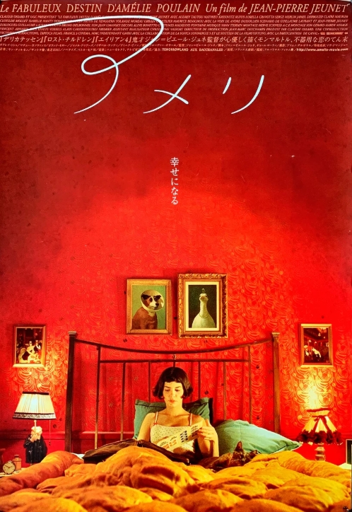
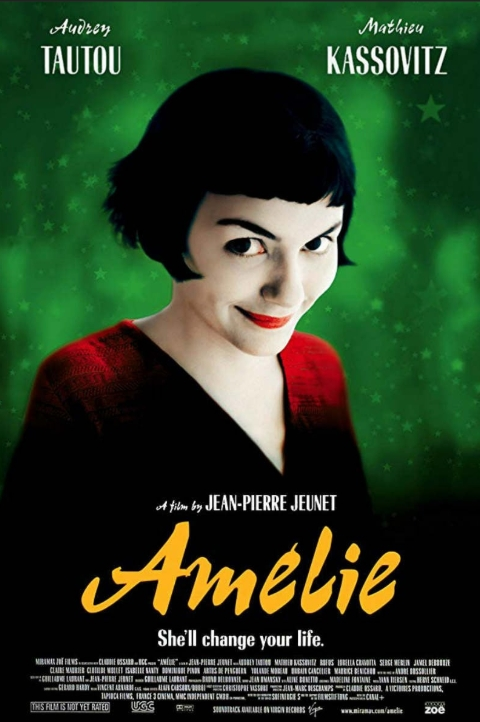

Amélie is an innocent and naive girl in Paris with her own sense of justice. She decides to help those around her and, along the way, discovers love.
France

Japan

United States
Japanese film posters tend to set the tone and atmosphere of the film, which this cozier scene achieves. On the other hand, American film posters usually feature the A-list actors' faces to amass interest, so the US version features the main character's face to achieve a similar effect. Additionally, both versions shortened the original title.